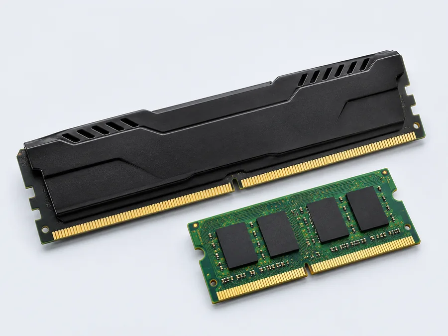

Componentes / Para PC e notebook
Memória RAM
Módulos para ampliar a memória do seu equipamento. Consulte a geração, a capacidade e o formato adequados.
Detalhes para a sua consulta
Informe o modelo do PC, da placa-mãe ou do notebook, a memória atual e a capacidade desejada. A geração DDR e o formato precisam ser compatíveis.
Sob consultaModelo e disponibilidade
Consultar no WhatsApp